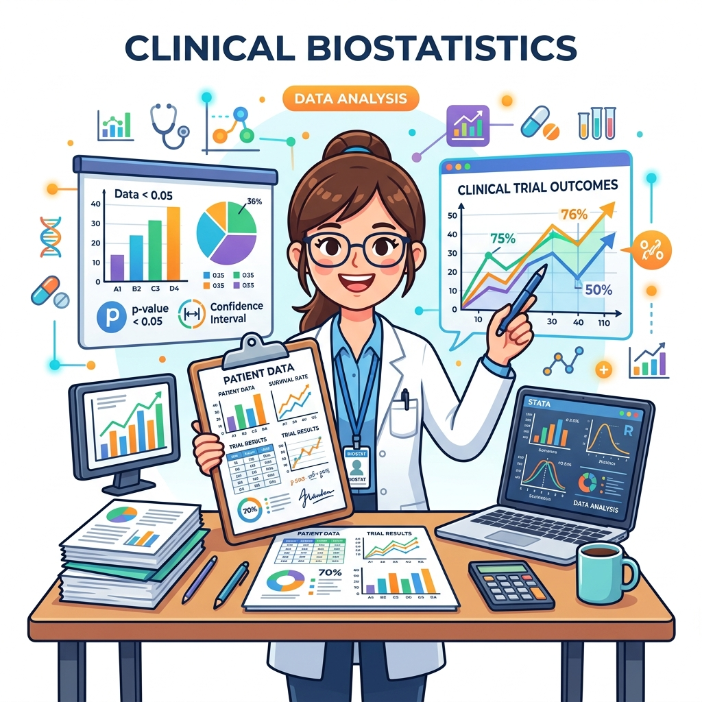
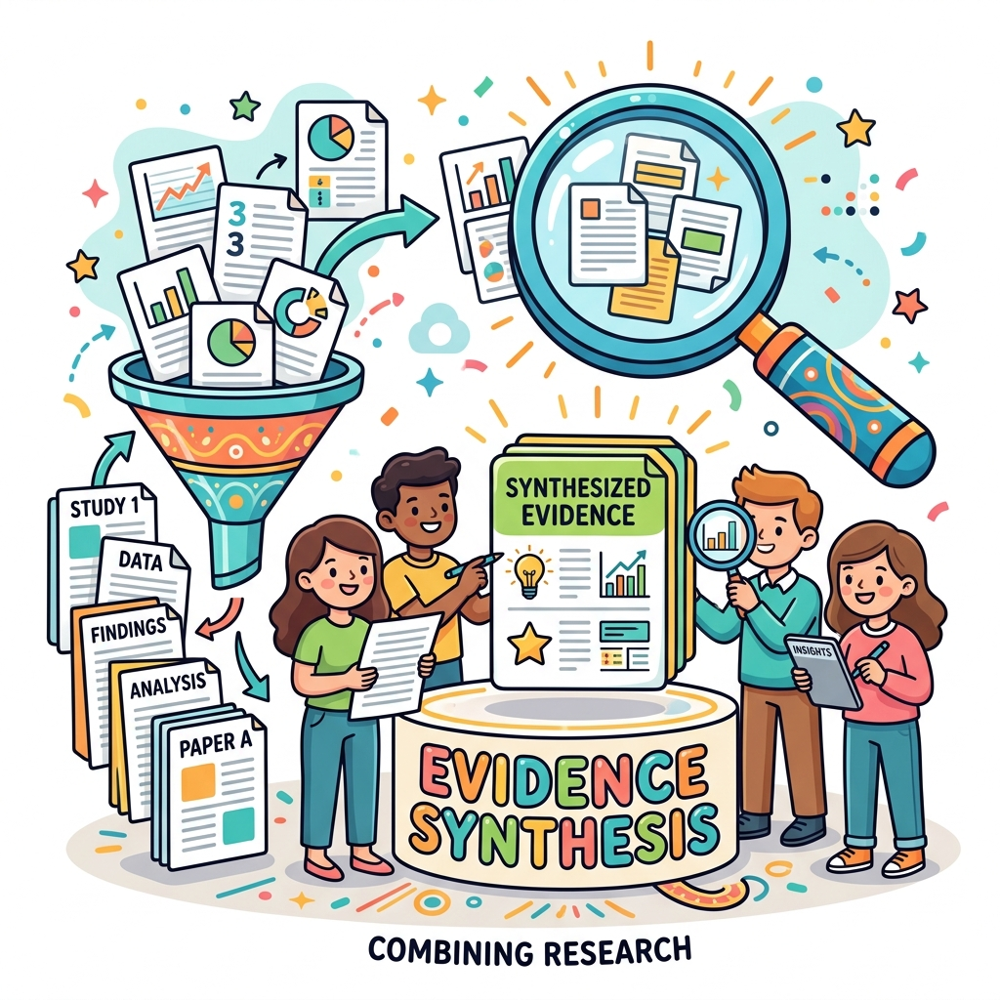
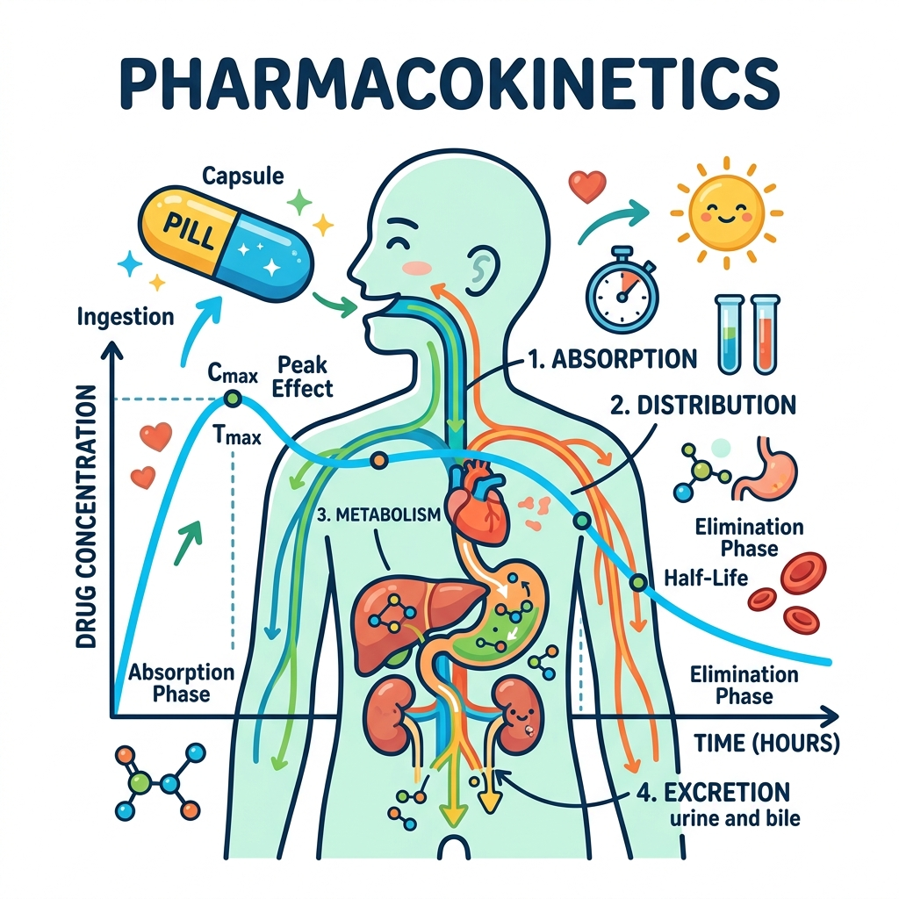

About
Translating quantitative evidence
into meaningful insights.
I am a Biostatistician with hands-on experience in clinical research, statistical analysis, healthcare data analysis, and evidence synthesis.
My analytical toolkit spans survival analysis, systematic review and meta-analysis, network meta-analysis, statistical modelling, sample size determination, power analysis, and statistical programming in SPSS, Stata, and R.
My work has covered clinical and epidemiological datasets, oncology research, pharmacokinetic and pharmacodynamic analyses, and health economics and outcomes research (HEOR).
I am particularly passionate about translating quantitative evidence into scientifically rigorous, clinically meaningful insights that drive evidence-based decision-making.
Professional Experience
Experience & Education.
September 2024 – Present
Biostatistician
Mediception Science Private Limited, Gurugram
Clinical statistical analysis, Statistical Analysis Plan development, sample size and power analysis, meta-analysis and network meta-analysis, oncology and survival analysis, PK/PD analysis, HEOR and decision modelling.
Research Internship
Research Intern
CSIR – Central Drug Research Institute, Lucknow
Developed a systematic review and meta-analysis protocol, registered on PROSPERO, extracted study-level data, and performed meta-analysis using Stata.
2022 – 2024
M.Sc. Biostatistics
University of Lucknow
2018 – 2021
B.Sc. Statistics
University of Lucknow
Capabilities
Technical & analytical expertise.
Hover over a capability and click Explore Now to dive in.

Clinical Biostatistics
Survival & Oncology

Evidence Synthesis

PK / PD
HEOR
Statistical Software
Selected Projects
Scientific case studies.
Hover over any project and click Explore Now for the full case study.
Risk Factors for Death Among COVID-19 Patients
Master's Thesis | Clinical Epidemiology — Identifying factors associated with mortality using clinical and demographic characteristics.
Prevalence of Osteoarthritis in Southeast Asia
Systematic Review & Meta-analysis | CSIR-CDRI — Synthesising evidence on osteoarthritis prevalence across Southeast Asian populations.
Survival Analysis in Clinical Research
Statistical Modelling | Simulated Dataset — Evaluating time-to-event outcomes between treatment groups using Kaplan–Meier and Cox regression.
Analytics Lab
Interactive statistical analysis.
Portfolio demonstrations of statistical methods and analytical workflows.
Survival Analysis
Kaplan–Meier curve, median survival, hazard ratio, confidence interval and p-value.
Meta-Analysis
Forest plot, pooled estimate, 95% CI, heterogeneity and subgroup analysis.
Sample Size & Power
Study design, effect size, alpha, power, allocation ratio and required sample size calculation.
Research & Development
Research, training & professional development.
Hover over any card and click Explore Now to learn more.
Research
- Master's Thesis — Identifying Risk Factors for Death Among COVID-19 Patients
- Research Internship — CSIR-CDRI, Lucknow
- Peer Reviewer — Journal of Investigative Medicine | 2026
Selected Training
- Cost-Effectiveness & Decision Modelling Using R — JNU
- Advanced Training in Sample Size Determination & Power Analysis
- Systematic Review and Meta-analysis Workshop
- SAS Certification
- O-Level Certification
Curriculum Vitae
Download the full professional profile.
Ankur Dhangar — CV
Biostatistician · Clinical Research · Evidence Synthesis · HEOR
Contact
Let's discuss your research.
Open to Collaboration
I am available for professional opportunities and research collaborations in clinical biostatistics, evidence synthesis, healthcare analytics, and health economics.